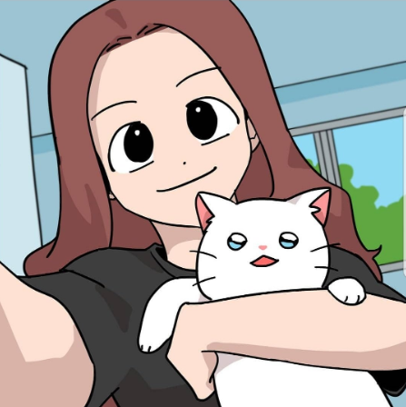

Bomi is the main character of a webtoon Meow Man. Bomi is a college student. She is best friends with a friend named Jina. Bo-mi picked up and raised an abandoned Chun-bae. Bo-mi knows that Chun-bae is the prince of Nyang-guk. Bo-mi cares about the New Year's. She also joined Chun-bae's fan club, "Chunbaeya." Bo-mi used to like Nam-hoon at the beginning of the semester. When Bomi was young, she raised a Nabi, Chunbae's younger brother. 